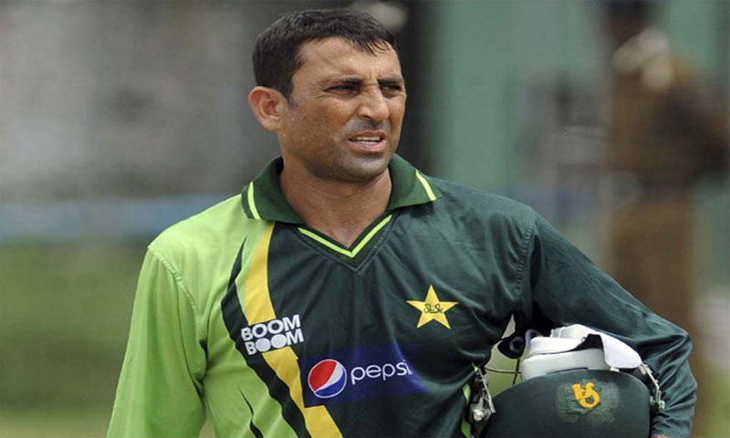
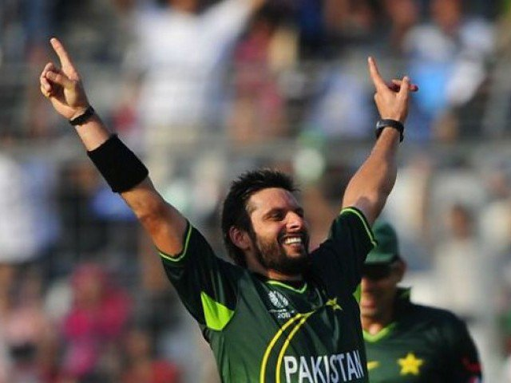
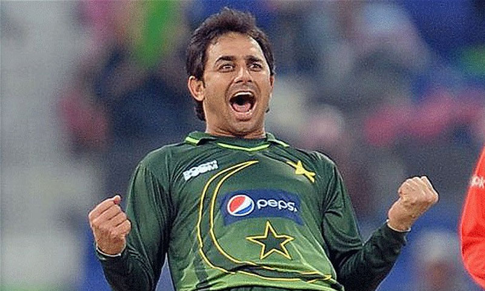
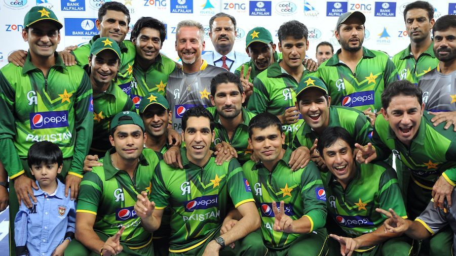

Younis Khan
A man of humble beginnings, he harboured a dream to one day represent his country at the highest level and set about making that a reality.Initially recognition was not forthcoming and toil was his lone companion.

Shahid Afridi
He holds the record for the fastest century (100 runs) in a ODI match, which he made in his first international innings. He scored 32 runs in a single over, the second highest scoring over ever in an

Saeed Ajmal Ajmal
Faisalabad, Faisalabad Wolves, Islamabad Cricket Association, Islamabad United, Khan Research Labs, Water and Power Development Authority, Worcestershire, Zarai Taraqiati Bank Limited

Pakistan Cricket Team Win The Championship
Pakistan Cricket Team Laatest News Info, Photo Gallery, Stats, Squad, Ranking, Venues Cricket Score of all the matcheeam Latest News Info, Photo Gallery, Stats, Squad, Ranking, Venues Cricket Score of all the matest News Info, Photo Gallery, Stats, Squad, Ranking, Venues Cricket Score of all the matcheeam Latest News Info, Photo Gallery, Stats, Squad, Ranking, Venues Cricket Score of all the matest News Info, Photo Gallery, Stats, Squad, Ranking, Venues Cricket Score of all the matcheeam Latest News Info, Photo Gallery, Stats, Squad, Ranking, Venues Cricket Score of all the matest News Info, Photo Gallery, Stats, Squad, Ranking, Venues Cricket Score of all the matcheeam Latest News Info, Photo Gallery, Stats, Squad, Ranking, Venues Cricket Score of all the mtest News Info, Photo Gallery, Stats, Squad, Ranking, Venues Cricket Score of all the matcheeam Latest News Info, Photo Gallery, Stats, Squad, Ranking, Venues Cicket Score of all the matcheeam Latest News Info, Photo Gallery, Stats, Squad, Ranking, Venues Cicket Score of all the matcheeam Latest News Info, Photo Gallery, Stats, Squad, Ranking, Venues Cricket Score of all the matches on Cricbuzz.com